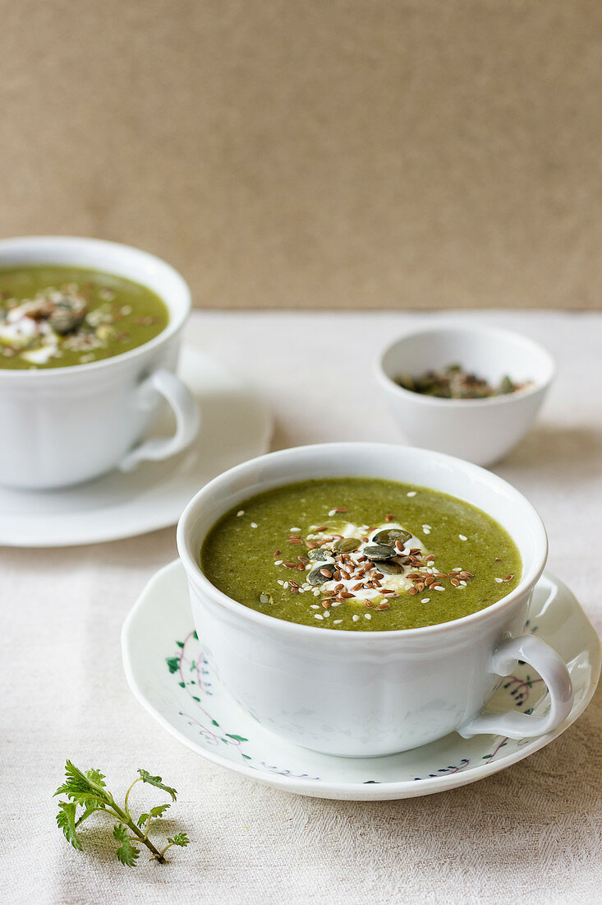

NETTLE SOUP (NASSELSOPPA)
Nasselsoppa is a well-known sign of spring in Sweden with hard-boiled eggs and creme fraiche as traditional accompaniments. Packed with nutrition and flavour, nettles have high quantities of iron, calcium, vitamin A and K. In medieval Europe they were used medicinally as a diuretic and to treat joint pain. Early nettles are tender and perfect for cooking.

Ingredients:
- 150 g (8 cups) of stinging nettle shoots
- 1 tbsp of olive oil
- 1 small onion, finely chopped
- 250 ml (1 cup) of water
- 1 tsp of salt
- 500 ml (2 cups) of good quality chicken or vegetable stock
- 1 tsp of dried thyme
- a pinch of white pepper
- 1 tbsp of cornflour (cornstarch)
- 4 hard boiled eggs
- 120 ml (1/2 cup) of creme fraiche
Preparation
- Rinse the nettles thoroughly, picking out any grass and creepy crawlies, and then drain.
- In a large pan, heat the oil and then saute' the onion for about 5 minutes, until soft without colouring.
- Add the water, salt, stock, dried thyme and a good pinch of white pepper. Bring to the boil and then add the nettles. Cover and leave to simmer for 20 minutes.
- Whizz the soup in a food processor (or use a hand blender) until smooth and then return to the pan.
- Dissolve the corn flour (cornstarch) in a little water and stir it into the soup.
- Bring back to a gentle boil, stirring regularly until the soup thickens slightly. Check and adjust the seasoning.
- Serve hot with halved hard-boiled eggs and a dollop of creme fraiche.
return to home page